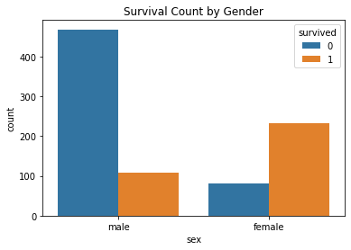
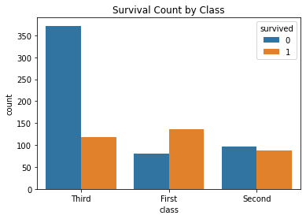
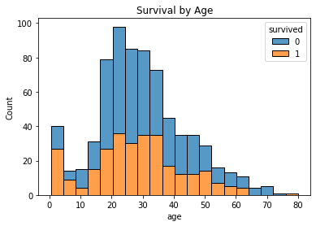

import numpy as np
import pandas as pd
import matplotlib.pyplot as plt
import seaborn as sns타이타닉 데이터 분석
df = sns.load_dataset('titanic')
df.head()| survived | pclass | sex | age | sibsp | parch | fare | embarked | class | who | adult_male | deck | embark_town | alive | alone | |
|---|---|---|---|---|---|---|---|---|---|---|---|---|---|---|---|
| 0 | 0 | 3 | male | 22.0 | 1 | 0 | 7.2500 | S | Third | man | True | NaN | Southampton | no | False |
| 1 | 1 | 1 | female | 38.0 | 1 | 0 | 71.2833 | C | First | woman | False | C | Cherbourg | yes | False |
| 2 | 1 | 3 | female | 26.0 | 0 | 0 | 7.9250 | S | Third | woman | False | NaN | Southampton | yes | True |
| 3 | 1 | 1 | female | 35.0 | 1 | 0 | 53.1000 | S | First | woman | False | C | Southampton | yes | False |
| 4 | 0 | 3 | male | 35.0 | 0 | 0 | 8.0500 | S | Third | man | True | NaN | Southampton | no | True |
# 타이타닉 데이터셋 로드
df = sns.load_dataset('titanic')# 데이터의 상위 5개 행 출력
print(df.head())
# 데이터의 기본 정보 확인 (열, 데이터 타입, 결측값)
print(df.info())
# 결측값 확인
print(df.isnull().sum()) survived pclass sex age sibsp parch fare embarked class \
0 0 3 male 22.0 1 0 7.2500 S Third
1 1 1 female 38.0 1 0 71.2833 C First
2 1 3 female 26.0 0 0 7.9250 S Third
3 1 1 female 35.0 1 0 53.1000 S First
4 0 3 male 35.0 0 0 8.0500 S Third
who adult_male deck embark_town alive alone
0 man True NaN Southampton no False
1 woman False C Cherbourg yes False
2 woman False NaN Southampton yes True
3 woman False C Southampton yes False
4 man True NaN Southampton no True
<class 'pandas.core.frame.DataFrame'>
RangeIndex: 891 entries, 0 to 890
Data columns (total 15 columns):
# Column Non-Null Count Dtype
--- ------ -------------- -----
0 survived 891 non-null int64
1 pclass 891 non-null int64
2 sex 891 non-null object
3 age 714 non-null float64
4 sibsp 891 non-null int64
5 parch 891 non-null int64
6 fare 891 non-null float64
7 embarked 889 non-null object
8 class 891 non-null category
9 who 891 non-null object
10 adult_male 891 non-null bool
11 deck 203 non-null category
12 embark_town 889 non-null object
13 alive 891 non-null object
14 alone 891 non-null bool
dtypes: bool(2), category(2), float64(2), int64(4), object(5)
memory usage: 80.7+ KB
None
survived 0
pclass 0
sex 0
age 177
sibsp 0
parch 0
fare 0
embarked 2
class 0
who 0
adult_male 0
deck 688
embark_town 2
alive 0
alone 0
dtype: int64# 통계 요약 정보 확인
print(df.describe()) survived pclass age sibsp parch fare
count 891.000000 891.000000 714.000000 891.000000 891.000000 891.000000
mean 0.383838 2.308642 29.699118 0.523008 0.381594 32.204208
std 0.486592 0.836071 14.526497 1.102743 0.806057 49.693429
min 0.000000 1.000000 0.420000 0.000000 0.000000 0.000000
25% 0.000000 2.000000 20.125000 0.000000 0.000000 7.910400
50% 0.000000 3.000000 28.000000 0.000000 0.000000 14.454200
75% 1.000000 3.000000 38.000000 1.000000 0.000000 31.000000
max 1.000000 3.000000 80.000000 8.000000 6.000000 512.329200from sklearn.model_selection import train_test_splitimport pandas as pd
df = pd.read_csv("titanic.csv") # 또는 train.csv 등X = df.drop("survived", axis=1) # 입력 데이터
y = df["survived"] # 타겟 데이터 (생존 여부)X_train, X_test, y_train, y_test = train_test_split(
X, y,
test_size=0.2, # 20%는 평가용 데이터
random_state=42, # 결과 재현 가능하게 설정
stratify=y # 클래스 비율 유지 (생존자 비율 유지)
)print("Train set:", X_train.shape, y_train.shape)
print("Test set:", X_test.shape, y_test.shape)Train set: (712, 14) (712,)
Test set: (179, 14) (179,)# 성별에 따른 생존자 수 시각화
sns.countplot(data=df, x='sex', hue='survived')
plt.title("Survival Count by Gender")
plt.show()
# 클래스별 생존자 수 시각화
sns.countplot(data=df, x='class', hue='survived')
plt.title("Survival Count by Class")
plt.show()

# 나이 분포에 따른 생존율 분석
sns.histplot(data=df, x='age', hue='survived', multiple='stack')
plt.title("Survival by Age")
plt.show()
#성별, 클래스, 나이 등이 생존율에 중요한 영향을 미쳤다는 점을 파악 가능